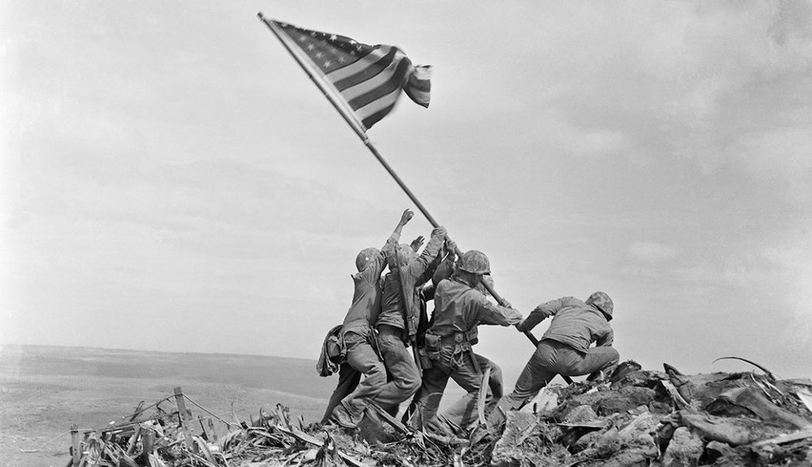

Main Events in 1945
← GO TO MAIN EVENTS
The Battle of Iwo Jima
硫黄島 の戦 い (19/2/1945 - 26/3/1945)
Stars and Stripes wave over the summit of Mt. Suribachi on Iwo Jima. 
Raising the Flag on Iwo Jima
硫黄島 の星条旗
by Joe Rosenthal of the Associated Press
- The island was invaded by American forces on February 19, 1945, and the subsequent Battle of Iwo Jima lasted five weeks. All but 200 or so of the 21,000 Japanese men on the island, as well as almost 7,000 Marines, were slain in some of the deadliest fighting of World War II.
The Battle of Okinawa
沖縄 の戦 い (1/4/1945 - 22/6/1945)
American aircraft carrier USS Bunker Hill burns after being hit by two kamikaze planes within 30 seconds. Rocket fire over southern Okinawa, c. May 1945.
by U.S. Marine Corps
- The battle was fought on Okinawa, which is located just 563 kilometres south of Kyushu. Its capture was viewed as a critical prelude to a ground attack of the Japanese home islands. The combat was one of the deadliest of the Pacific War, killing about 12,000 Americans and 100,000 Japanese, including both sides' leading generals. In addition, the Japanese military ordered the death of at least 100,000 people.
Atomic Bombings of Hiroshima and Nagasaki
日本 への原子爆弾投下
A photo taken by Hiromichi Matsuda from the rooftop of the office of then Kawanami Kōgyō Shipyard located in Kōyagi, Nagasaki. A garden incinerated in the atomic blast is seen in Hiroshima on Aug. 20, 1945, in this image taken by photographer Masami Oki and published in the University of Texas Press's "Flash of Light, Wall of Fire."
- President Harry S. Truman gave the order to drop the two atomic bombs on Japan.
- Little Boy to Hiroshima, resulting in 140,000 deaths.
- Fat Man to Nagasaki, resulting in 80,000 deaths.
- Japan surrendered six days later after the bombings, which was on 15th of August.
- Why these cities?
- Hiroshima was strategically important from a military aspect since it hosted the second Army Headquarters, which was in charge of southern Japan's defence. It was used for storage, communication, and military assembly. The city's geology added to its allure as a place to display the bombs' devastating power—the neighbouring hills may have increased the amount of destruction caused by the atomic explosion, and the rivers that ran through it kept Hiroshima off the list of firebombing targets.
- Kyoto was another excellent target since it had a population of one million people, was a significant industrial area, and was Japan's intellectual core and former capital. Finally, they excluded Kyoto from consideration since it was Japan's cultural centre and a beloved city. Another significant port, Nagasaki, was chosen as its substitute.
- Hiroshima, Kokura, Niigata, and Nagasaki were chosen as targets on July 25, 1945. The weather prediction in Hiroshima for August 6 indicated a clear day, therefore preparations were made. The targeted target for the second strike, Kokura, was only rescued when it was suddenly hidden by a cloud on August 9th. Instead, Nagasaki was destroyed.
← GO TO MAIN EVENTS